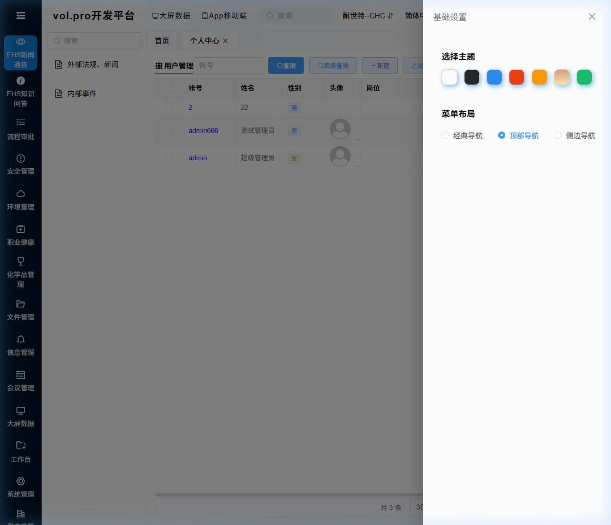
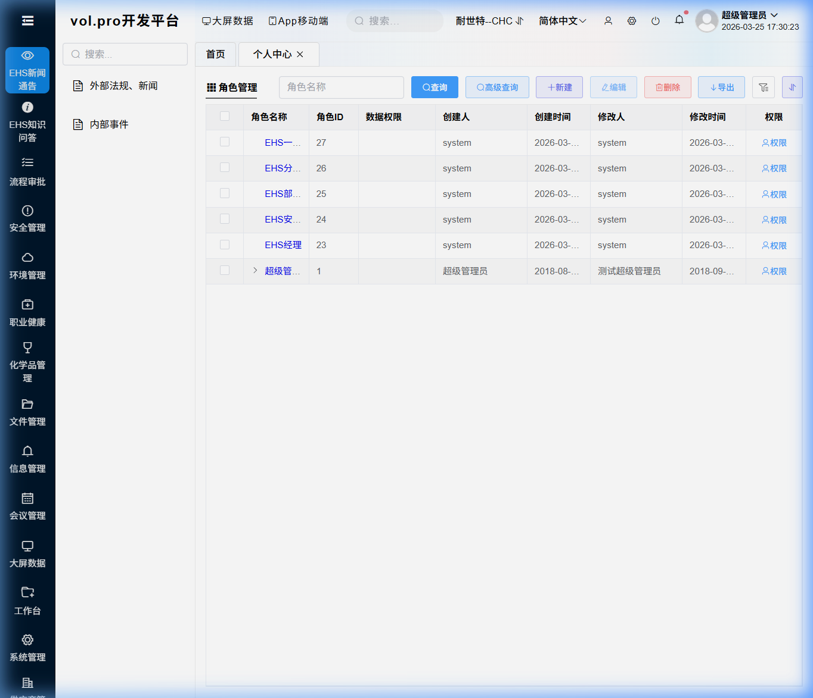
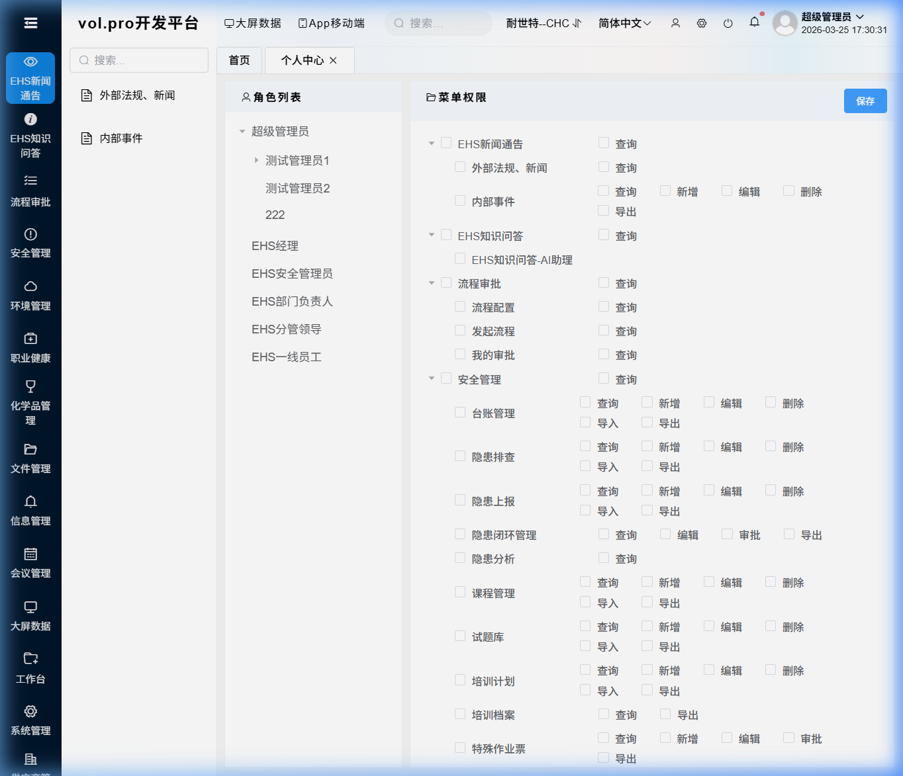
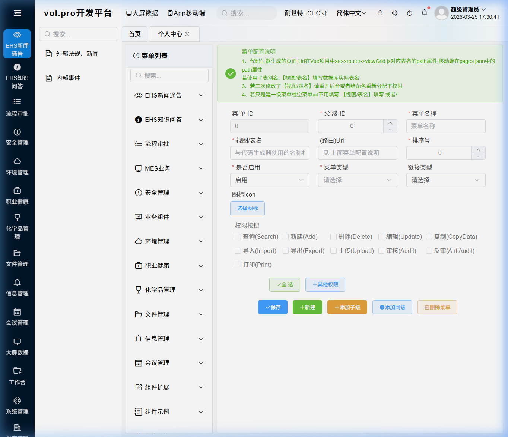

版本: V2.1 | 更新日期: 2026年3月26日 | 适用角色: 系统管理员 / EHS全体用户
EHS管理系统（Environment, Health & Safety）是基于 VOL Pro 平台构建的企业级环境、健康与安全管理系统。
系统能做什么？
| 功能模块 | 说明 |
|---|---|
| 📊 EHS管理驾驶舱 | 实时KPI看板，安全天数、隐患数、培训率一目了然 |
| 📰 外部法规新闻 | AI自动扫描政府网站，生成EHS法规动态日报/周报/月报 |
| 🏭 内部事件跟踪 | 记录集团各工厂事故、未遂事件、安全隐患 |
| 🤖 AI知识问答 | 基于企业知识库的智能问答，快速查询EHS规章制度 |
| 📱 手机扫码上报 | 现场扫描二维码，用手机拍照/录视频上报隐患、事故、巡查 |
| 🚨 紧急报警通知 | 重大隐患/事故自动推送 Teams 卡片消息 + 页面弹窗提醒 |
| 📋 安全台账 | 管理各类安全检查、培训、应急预案 |
| 👥 用户权限 | 灵活的用户/角色/权限管理，支持多工厂 |
💡 浏览器推荐：建议使用 Chrome 或 Edge 最新版本。
| 项目 | 地址 |
|---|---|
| 🖥️ 前端（用户登录入口） | https://cntest.nexteer.com:9003/#/login |
| ⚙️ 后端 API（Swagger文档） | https://cntest.nexteer.com:9103/index.html |
| 📱 手机上报页面 | https://cntest.nexteer.com:9003/#/mobile/ehs-report |
📌 请将前端地址添加到浏览器收藏夹，方便日后快速访问。
在浏览器地址栏输入 https://cntest.nexteer.com:9003/#/login ，打开登录页面：
| 步骤 | 操作 |
|---|---|
| ① | 在 用户名 输入框中输入您的账号 |
| ② | 在 密码 输入框中输入您的密码 |
| ③ | 点击 登 录 按钮 |
📌 首次登录请使用管理员分配的初始账号和密码。登录成功后建议立即修改密码。
| 账号 | 密码 | 说明 |
|---|---|---|
| 超级管理员 | （联系IT获取） | 拥有所有权限，仅限IT管理员使用 |
| 问题 | 解决方法 |
|---|---|
| 提示"用户名或密码错误" | 检查大小写，确认账号和密码是否正确 |
| 页面空白或无法打开 | 检查网络连接，确认已连接公司网络 |
| 忘记密码 | 联系系统管理员重置密码 |
登录成功后，系统自动进入 EHS管理驾驶舱：

| 区域 | 位置 | 说明 |
|---|---|---|
| 连续安全天数 | 右上角绿色圆 | 当前工厂的连续无事故天数 |
| KPI指标卡片 | 中间6个彩色卡片 | 本月安全隐患数、应急预案数等核心指标 |
| 最新法规与新闻 | 左下 | AI自动生成的最新EHS法规和行业新闻 |
| 内部事件概览 | 右下 | 集团各工厂最近的安全事件 |
💡 点击 "查看全部 →" 可跳转到对应详情页面。

| 步骤 | 操作 |
|---|---|
| ① | 点击右上角的 当前工厂名称（如"耐世特-柳州"） |
| ② | 在下拉列表中选择目标工厂 |
| ③ | 系统自动切换，所有页面数据更新为所选工厂的数据 |
⚠️ 切换工厂后，首页KPI、事件列表等数据都会切换。请确认选择了正确的工厂。

点击右上角的 语言选项，可选择：简体中文（默认）或 English

点击右上角的 ⚙️ 设置图标，可设置：
| 设置项 | 说明 |
|---|---|
| 导航模式 | 经典模式（左侧菜单，推荐新手使用）/ 顶部导航 / 侧栏导航 |
| 主题色 | 点击色块选择喜欢的颜色，自动保存 |
| 头部设置 | 固定或隐藏顶部导航栏 |
| 步骤 | 操作 |
|---|---|
| ① | 点击右上角的 用户头像 或 用户名 |
| ② | 选择 "个人中心" 或 "修改密码" |
| ③ | 输入 旧密码 |
| ④ | 输入 新密码（建议8位以上，含字母和数字） |
| ⑤ | 确认新密码，点击 确定 |
⚠️ 修改密码后需重新登录。请务必记住新密码！
📌 此章节面向系统管理员。创建用户账号是使用系统的第一步。
点击左侧菜单 用户管理 → 用户管理，或通过顶部搜索框搜索"用户"

| 步骤 | 操作 | 说明 |
|---|---|---|
| ① | 点击工具栏 新建(Add) 按钮 | 弹出新建用户表单 |
| ② | 填写 用户名（登录账号） | 必填，建议用工号或姓名拼音，如 zhangsan |
| ③ | 填写 真实姓名 | 必填，显示名称 |
| ④ | 填写 手机号 | 用于接收通知 |
| ⑤ | 填写 邮箱 | 用于邮件通知 |
| ⑥ | 设置 密码 | 初始密码，建议 Abc@1234，告知用户首次登录后修改 |
| ⑦ | 选择 所属部门 | 从下拉列表中选择用户所在部门 |
| ⑧ | 选择 角色 | 关键步骤！决定用户能看到哪些菜单和操作 |
| ⑨ | 设置 启用状态 | 默认启用，离职人员可设为禁用 |
| ⑩ | 点击 保存 | 完成创建 |
| 操作 | 步骤 |
|---|---|
| 编辑用户 | 勾选用户 → 点击 编辑 → 修改后 保存 |
| 禁用用户 | 编辑用户 → 启用状态设为 禁用 → 保存（离职建议禁用而非删除） |
| 重置密码 | 编辑用户 → 密码字段输入新密码 → 保存后通知用户 |
| 批量导入 | 点击 导入 → 下载模板 → 填写 → 上传 Excel |
📌 角色是权限的载体。每个用户通过"角色"获得对应的菜单和操作权限。
点击左侧菜单 用户管理 → 角色管理

| 角色名称 | 说明 | 适用人员 |
|---|---|---|
| 超级管理员 | 拥有所有权限 | IT管理员 |
| EHS管理员 | 所有EHS模块的完整权限 | EHS部门主管 |
| EHS专员 | EHS模块的查看和编辑权限 | EHS工程师 |
| 普通用户 | 仅首页和知识问答 | 一般员工 |
| 步骤 | 操作 |
|---|---|
| ① | 点击 新建(Add) 按钮 |
| ② | 填写 角色名称（如"苏州工厂EHS主管"） |
| ③ | 填写 角色描述 |
| ④ | 设置 启用状态 为启用 |
| ⑤ | 点击 保存 |
| ⑥ | 进入 权限分配 页面为该角色配置菜单权限（见第9节） |
📌 权限分配是将"菜单"和"操作按钮"分配给"角色"的过程。
点击左侧菜单 用户管理 → 权限管理

| 步骤 | 操作 |
|---|---|
| ① | 在 左侧角色列表 中选择要配置的角色 |
| ② | 右侧显示 菜单树 |
| ③ | 勾选 该角色需要访问的菜单 |
| ④ | 展开具体菜单 → 勾选 操作按钮（查询/新建/编辑/删除等） |
| ⑤ | 点击 保存 按钮，权限立即生效 |
| 建议 | 说明 |
|---|---|
| 🎯 最小权限原则 | 只给用户必要的权限 |
| 📋 按岗位创建角色 | 如"EHS专员"、"工厂安全主管" |
| 🔒 敏感操作限制 | "删除"权限应严格控制 |
| ✅ 必给查询权限 | 进入任何菜单至少需要"查询(Search)"权限 |
点击左侧菜单 系统设置 → 菜单设置

| 操作 | 步骤 |
|---|---|
| 添加菜单 | 选择父级 → 新建 → 填写名称/URL → 保存 → 在权限管理中分配 |
| 编辑菜单 | 选中 → 编辑 → 修改后保存 |
⚠️ 新建菜单后，需要在 权限管理 中给对应角色分配权限，否则用户看不到。
点击左侧菜单 用户管理 → 组织架构
支持创建多级部门树（集团 → 工厂 → 车间 → 班组），用户关联到部门后可实现基于部门的数据权限控制。
| 菜单分组 | 包含模块 |
|---|---|
| EHS新闻通讯 | 外部法规、新闻 / 内部事件 |
| EHS知识问答 | EHS知识问答-AI助理 |
| 安全管理 | 安全台账、隐患排查（含手机扫码）、隐患上报、事故管理 |
| 环境管理 | 废弃物管理、化学品管理 |
| 职业健康 | 培训管理、PPE管理 |
| 用户管理 | 用户/角色/权限/组织架构 |
| 系统设置 | 菜单设置/数据字典/定时任务 |
左侧菜单 EHS新闻通讯 → 外部法规、新闻

本模块由 AI自动巡检并生成 最新EHS法规和新闻。
| 功能 | 操作 |
|---|---|
| 切换报告类型 | 点击 全部/日报/周报/月报 标签 |
| 按日期筛选 | 选择开始和结束日期 |
| 搜索关键词 | 输入标题/摘要/来源关键词 |
| 查看详情 | 点击任意行 → 弹出详情窗口 |
| 手动生成 | 右上角绿色按钮 → 立即触发AI生成 |
左侧菜单 EHS新闻通讯 → 内部事件

| 功能 | 操作 |
|---|---|
| 新增事件 | 点击 新建 → 填写事件信息 → 保存 |
| 编辑事件 | 勾选一行 → 点击 编辑 |
| 导出Excel | 点击 导出 按钮 |
左侧菜单 EHS知识问答 → EHS知识问答-AI助理

| 功能 | 操作 |
|---|---|
| 提问 | 输入问题 → Enter 发送 |
| 换行 | Shift + Enter |
| 连续追问 | 直接输入，AI自动关联上下文 |
| 新会话 | 右上角 新会话 按钮 |
💡 提问尽量具体："有限空间作业需要哪些审批手续？"
🆕 V2.1 新增功能：员工在产线/车间现场发现隐患或事故时，无需回到电脑前，直接用手机扫码即可拍照上报。
在 PC 端打开 安全管理 → 隐患上报 页面，页面顶部有一个 📱 手机扫码上报 按钮。
点击该按钮后，会弹出一个二维码面板：
⚠️ 重要：手机需连接公司 WiFi 或 VPN 才能访问系统。
用手机扫描二维码后，会打开 "EHS 现场快报" 手机页面。
第一步：选择上报类型
页面顶部有三个选项卡，点击选择：
| 类型 | 图标 | 适用场景 |
|---|---|---|
| ⚠️ 隐患上报 | ⚠️ | 发现安全隐患（设备故障、环境问题等） |
| 🚨 事故上报 | 🚨 | 发生了安全事故（工伤、火灾、泄漏等） |
| 🔍 巡查记录 | 🔍 | 安全巡检记录（日常/专项/节前检查等） |
第二步：填写表单
根据不同的上报类型，填写对应的信息：
隐患上报字段：
| 字段 | 必填 | 说明 |
|---|---|---|
| 隐患等级 | ✅ | 低风险 / 一般风险 / 较大风险 / 重大隐患 / 特别重大隐患 |
| 隐患类别 | 选填 | 机械安全/电气安全/消防安全/化学品/高处作业等 |
| 隐患描述 | ✅ | 简要描述发现的隐患 |
| 详细说明 | 选填 | 补充详细信息 |
| 发现位置 | 选填 | 例：A车间3号产线 |
事故上报字段：
| 字段 | 必填 | 说明 |
|---|---|---|
| 事故等级 | 选填 | 未遂事件 / 一般 / 较大 / 重大 / 特别重大 |
| 事故类型 | ✅ | 工伤/设备/火灾/化学品/触电/高处坠落等 |
| 事故标题 | ✅ | 简要描述事故情况 |
| 事故经过 | 选填 | 详细描述事故过程 |
| 发生地点 | 选填 | 事故发生地点 |
| 受伤/死亡人数 | 选填 | 人员伤亡统计 |
巡查记录字段：
| 字段 | 必填 | 说明 |
|---|---|---|
| 检查类型 | ✅ | 日常巡查/专项检查/季度检查/节前检查等 |
| 检查标题 | ✅ | 例：2号厂房日常巡查 |
| 检查区域 | 选填 | 例：B2车间 |
| 检查项数 | 选填 | 本次巡查检查项总数 |
| 发现隐患数 | 选填 | 本次巡查发现的隐患数量 |
第三步：拍照/录视频
表单下方有 📷 现场照片/视频 区域，支持以下操作：
| 按钮 | 功能 |
|---|---|
| 📸 拍照 | 调用手机后置摄像头拍照 |
| 🎥 录视频 | 调用手机摄像头录制现场视频 |
| 🖼️ 相册 | 从手机相册选择已有的照片或视频 |
第四步：提交
点击绿色的 📤 提交报告 按钮，系统将：
💡 提交成功后，可以点击 "继续上报" 按钮填写下一条记录。
手机提交的记录会直接出现在 PC 端的列表中：
EHS管理员可在 PC 端进一步编辑、审核、分配整改责任人。
🆕 V2.1 新增功能：当有人上报 重大隐患 或 重大事故 时，系统会自动触发两种报警通知。
以下等级的隐患或事故提交后，会自动触发紧急通报：
| 模块 | 触发等级 |
|---|---|
| 隐患上报 | 重大隐患、特别重大隐患 |
| 事故上报 | 重大、特别重大 |
📌 普通等级（一般风险、较大风险等）不会触发报警，但记录仍然正常保存。
当触发报警后，所有正在使用系统的用户 的画面上会弹出一个红色的紧急通报弹窗：
⚠️ EHS 紧急通报 — 请立即关注
🚨 紧急安全通报
【重大隐患】测试--Test--发现设备重大隐患
【重大隐患】测试--Test--发现设备重大隐患，请及时检查并处理
发布时间: 2026-03-26 11:30:27
[我已知悉]
系统同时会通过 Power Automate Webhook 向 Microsoft Teams 频道发送一条结构化通知卡片：
──────────────────────────────────────
🚨 EHS 紧急通报 — 重大隐患
测试--Test--发现设备重大隐患
模块 隐患上报
等级 重大隐患
工厂 EHS
时间 2026-03-26 00:00
测试--Test--发现设备重大隐患，请及时检查并处理
──────────────────────────────────────
Teams 通知特点：
员工上报（PC或手机）
│
▼
系统保存记录
│
▼
判断等级 ≥ 重大？
╱ ╲
是 否
│ │
▼ ▼
触发报警 正常保存
│ （无通知）
├──→ ① 页面弹窗（SignalR, 所有在线用户）
│
└──→ ② Teams 卡片消息（Webhook, 指定频道）
Teams 通知的 Webhook URL 配置在后端 appsettings.json 中：
"EhsNotification": {
"TeamsWebhookUrl": "https://...",
"UrgentLevels": [ "重大", "特别重大", "重大隐患", "特别重大隐患" ]
}
TeamsWebhookUrl：Power Automate 流的触发 URLUrgentLevels：哪些等级的事件需要触发报警，可自行调整| 操作 | 方法 |
|---|---|
| 排序 | 点击表头列名 |
| 调整列宽 | 拖拽表头分隔线 |
| 翻页 | 底部分页控件 |
| 每页条数 | 选择 20/50/100 |
| 按钮 | 功能 |
|---|---|
| 🔍 查询(Search) | 按条件搜索 |
| ➕ 新建(Add) | 新增记录 |
| 🗑️ 删除(Delete) | 删除选中记录 |
| ✏️ 编辑(Update) | 编辑选中记录 |
| 📥 导入(Import) | Excel批量导入 |
| 📤 导出(Export) | 导出为Excel |
| 问题 | 解决方法 |
|---|---|
| 系统打开很慢 | 用 Chrome/Edge，清除缓存（Ctrl+Shift+Delete） |
| 页面样式错乱 | Ctrl+Shift+R 强制刷新 |
| 手机扫码打不开 | 确认手机已连接公司 WiFi 或 VPN |
| 手机扫码二维码显示localhost | 你在本机调试环境访问的，部署到服务器后二维码会自动变为正式地址 |
| Teams 没收到通知 | 检查 Webhook URL 是否配置正确，联系 IT 检查 |
| AI问答连接失败 | 点击"测试连接"，联系IT检查知识库服务 |
| 看不到某个菜单 | 联系管理员在"权限管理"中为您的角色分配该菜单 |
| 按钮灰色不能点击 | 您的角色没有该操作权限，联系管理员分配 |
| 忘记密码 | 联系管理员重置 |
| 退出系统 | 右上角头像 → "退出登录" |
以下是部署新系统后，管理员需要完成的初始化步骤：
appsettings.json 中 EhsNotification 节）技术支持：如遇到本手册未覆盖的问题，请联系EHS系统管理员或IT支持团队。